Research
Research for this project focused on understanding Design System best practices. As a small and highly innovative team, we wanted to incorporate atomic design framework while still allowing for design flexibility. We began by studying established design systems and leveraging resources from Figma's public repositories, industry webinars, and design blogs.
Design Process
The following steps outline our design approach, continuously refined with rapid iteration and internal testing along the way.
- Using Atomic Design framework, we built the component library from the ground up, starting with foundational elements like colors and typography before moving to more complex components such as buttons, menus, and forms. The framework is designed to ensure modularity and reusability.
- We created comprehensive style guides and detailed documentation for each component, defining its purpose, usage, accessibility considerations, and implementation specifics for developers.
- We published the design system to a version-controlled Figma library so that all styles, icons, components, templates, and other assets can be accessed from within any file.
The following highlights include images from two different design systems.
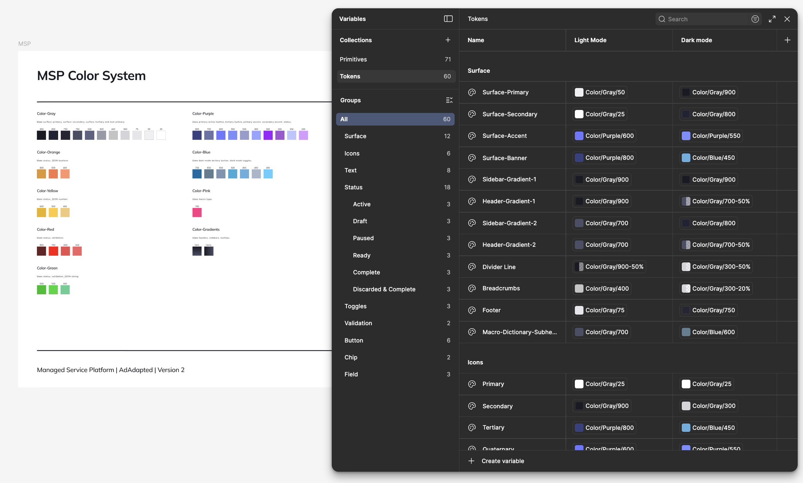
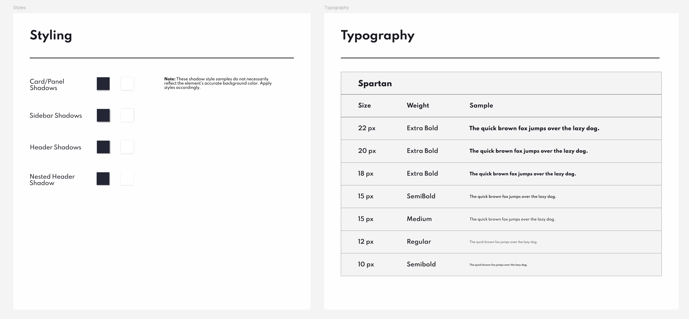
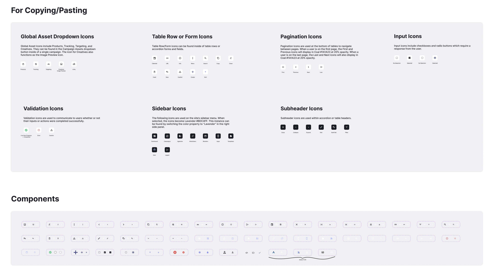
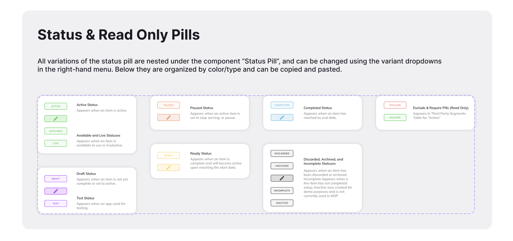
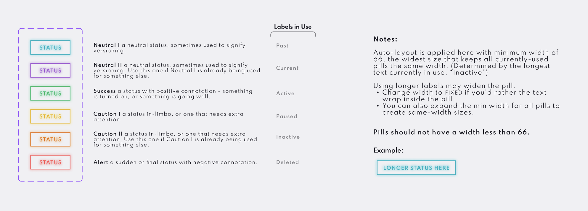
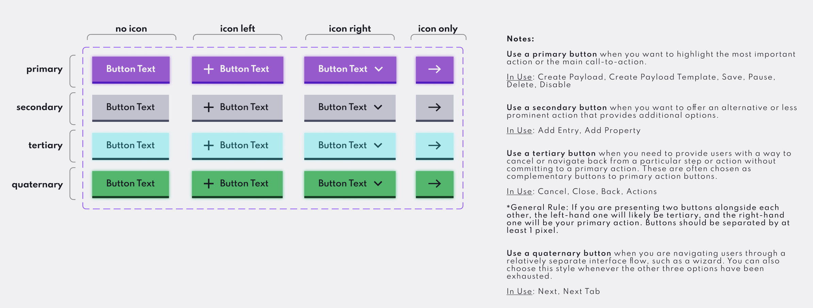
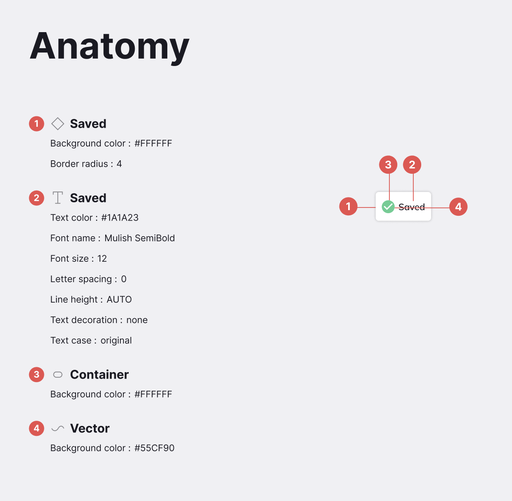
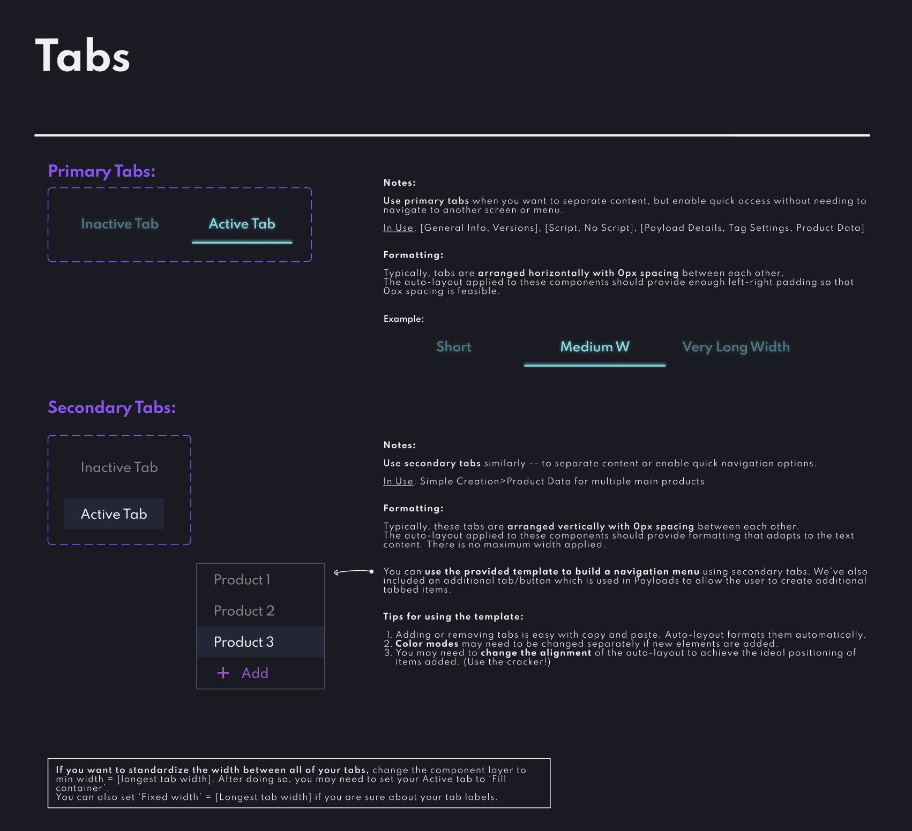
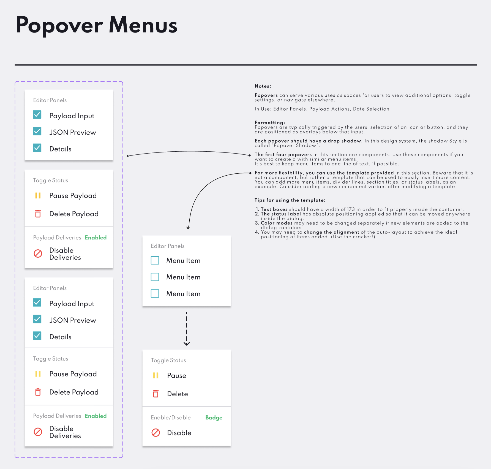
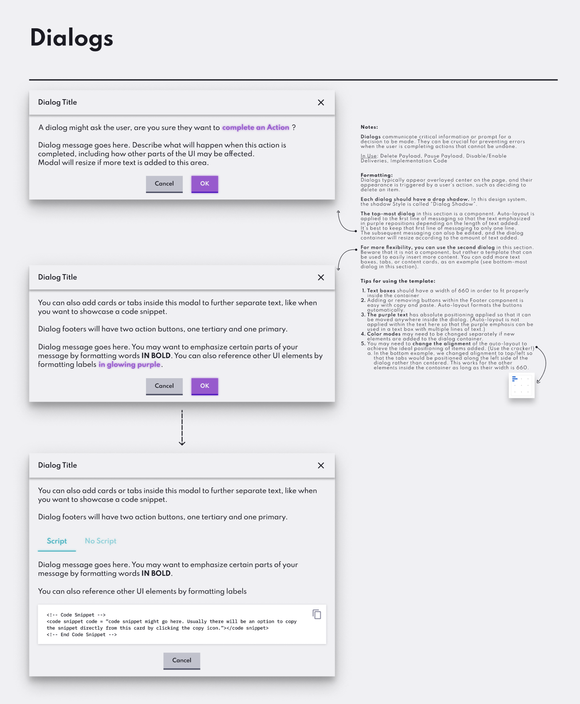
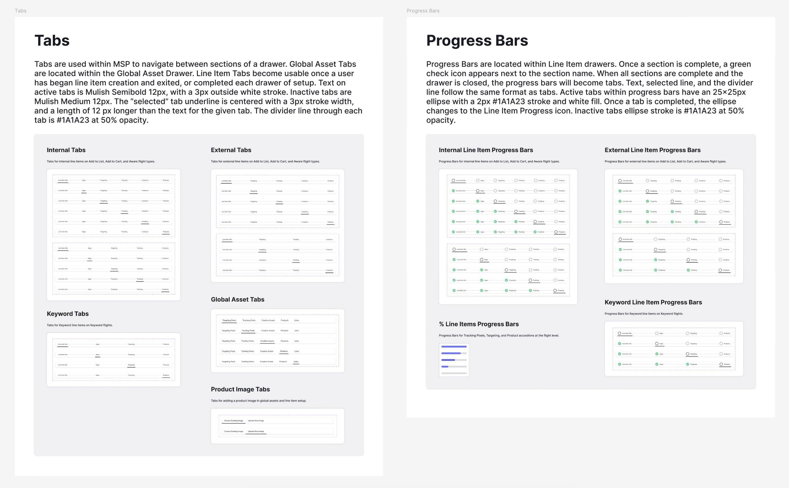
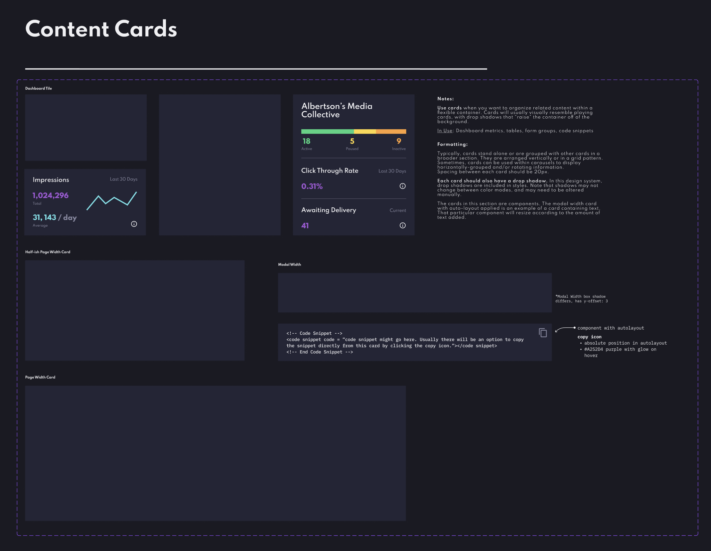
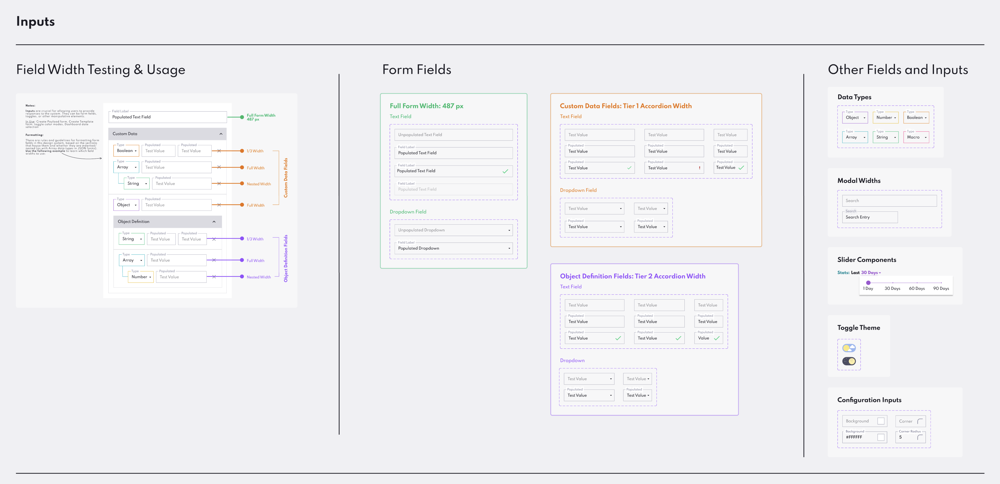
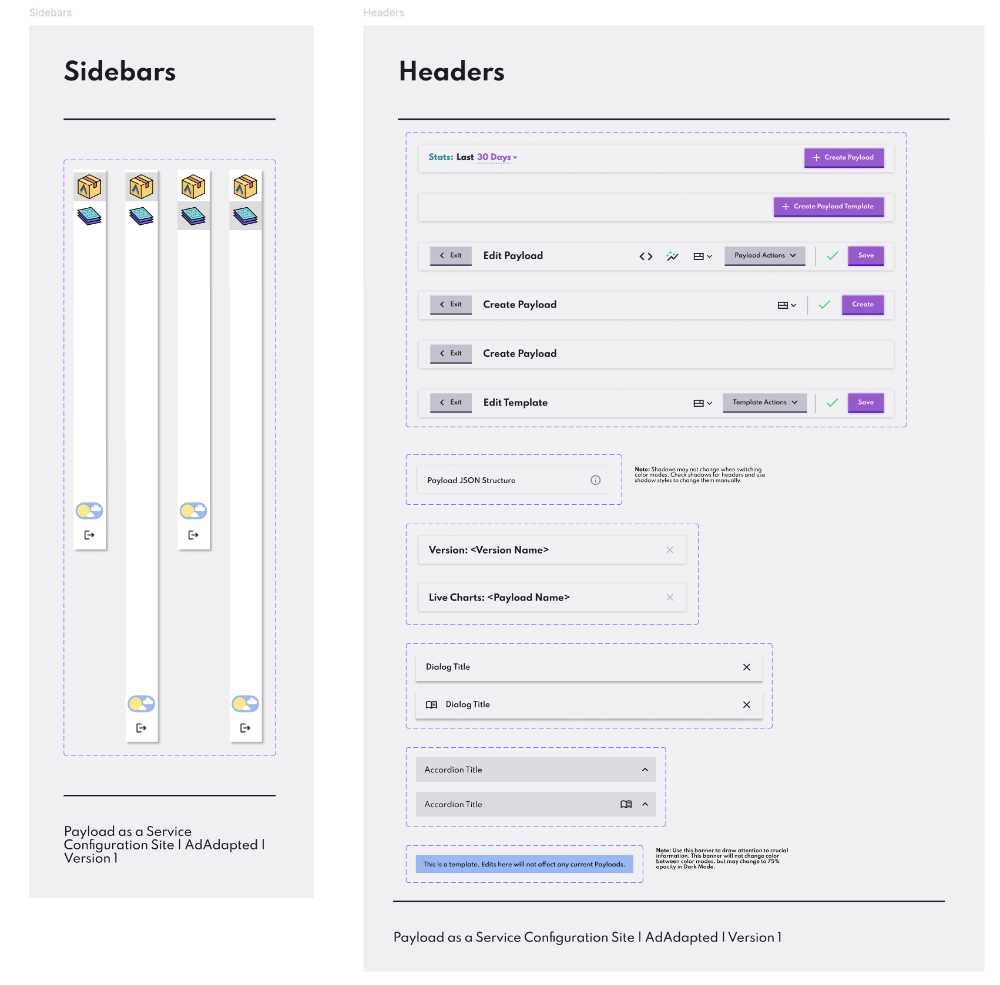